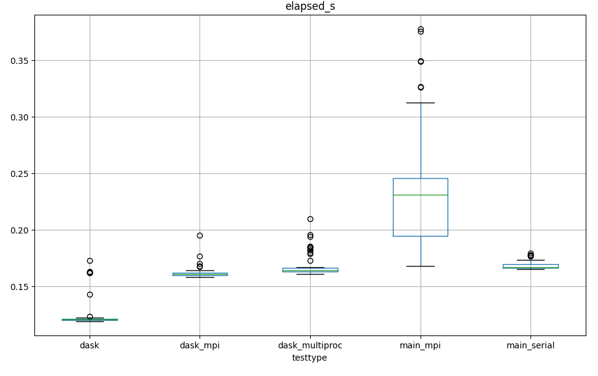

A Daskified yt : reading data¶
how yt works and how Dask can help¶
For discrete particle datasets, yt leverages several approaches to achieve efficient lazy loading of large datasets. When a user then reads in data, for example with code like
ds = yt.load_sample()
sp = ds.sphere(ds.domain_center, 0.25)
density = sp[("PartType0", "Density")]
yt will:
generate a spatial bitmap index for the dataset
use bitmap indexing to find data_files that overlap with a selection
iterate over the
data_files, for each ofdata_files: a. open the file b. generate a mask using the selection object and a particle’s coordinates c. read the data, applying the mask
Step 0 is a one-time step for a dataset that uses Morton Indexing, a spatial bitmap-indexing algorithm, to efficiently map a regions of a physical domain to the data whether on-disk or elsewhere (cite yt4 paper, in prep). So as the first step of a selection, yt will first find the bitmap indices that intersect a selection object in order to quickly identify only those files that contain data within the selector and avoid reading datafiles unnecessarily. To further enhance read times, yt applies data selections at read to datafiles individually so that only data satisfying the selection criteria is returned (rather than reading the whole array into memory and then applying a selection).
This approach can be readily adapted to dask arrays in such a way that simplifies yt’s code, particularly yt’s frontend infrastructure. In yt, a frontend corresponds to data-specific methods for reading data. At present, implementing a new frontend requires writing an implementation of step 2 above, which requires some knowledge of yt’s internal working (the data_files, selector objects) as well as knowledge of a frontend’s native data structures (to read the raw data). With Dask, however, we can maintain the same efficiency while separating step 2 above into separate methods.
In simplified pseudo-code, this looks like:
def _read_particle_fields(self, fields, selector_obj, ):
# assemble the self.data_files that intersect the selector
dfi, nfiles = self._identify_file_masks(dobj)
data_file_subset = [self.data_files[df_i] for df_i in dfi]
# get a dask array where each chunk is a data_file
data = self.io._read_from_datafiles(data_file_subset, fields_to_read)
# apply a selector object to each chunk of the dask array
data = self.apply_selector_mask(fields_to_return, selector_obj) # uses map_blocks function
return data
where read_from_datafiles constructs dask arrays from delayed reads (again, pseudo-code):
def _read_from_datafiles(data_files, fields_to_read):
delayed_array = []
for data_file in data_files:
shape, dtype = self._get_data_file_ptype_counts(data_file, fields_to_read)
vals = dask_delayed(frontend_read_particle_fields)(data_file, field_info) # this is the actual io call
delayed_array.append(dask_array.from_delayed(vals, shape, dtype=dtype))
return dask.array.concatenate(delayed_array, axis=0)
What’s nice about the above Daskified approach is that while _read_particle_fields is written linearly (read in data then apply selector to data) because the data arrays here are dask arrays, the selector is applied by-chunk using dask.array.map_blocks so that we are still handling each chunk separately. This greatly simplifies frontend development: to write the io methods for a new frontend, one need only implement a function to read from a single data_file (called frontend_read_particle_fields above)! Additionally, we can directly return Dask arrays, allowing a user to easily analyize their data in parallel when yt does not already have an optimized option.
Examples: simple reads and selections¶
These exmaples use the scipy2021 branch from havlin’s unyt and yt forks (link it).
%%time
import yt
ds = yt.load_sample("snapshot_033")
ad = ds.all_data()
yt : [INFO ] 2021-06-25 15:36:48,317 Files located at /home/chris/hdd/data/yt_data/yt_sample_sets/snapshot_033.tar.gz.untar/snapshot_033/snap_033.
yt : [INFO ] 2021-06-25 15:36:48,317 Default to loading snap_033.0.hdf5 for snapshot_033 dataset
yt : [INFO ] 2021-06-25 15:36:48,404 Parameters: current_time = 4.343952725460923e+17 s
yt : [INFO ] 2021-06-25 15:36:48,405 Parameters: domain_dimensions = [1 1 1]
yt : [INFO ] 2021-06-25 15:36:48,405 Parameters: domain_left_edge = [0. 0. 0.]
yt : [INFO ] 2021-06-25 15:36:48,406 Parameters: domain_right_edge = [25. 25. 25.]
yt : [INFO ] 2021-06-25 15:36:48,406 Parameters: cosmological_simulation = 1
yt : [INFO ] 2021-06-25 15:36:48,406 Parameters: current_redshift = -4.811891664902035e-05
yt : [INFO ] 2021-06-25 15:36:48,407 Parameters: omega_lambda = 0.762
yt : [INFO ] 2021-06-25 15:36:48,407 Parameters: omega_matter = 0.238
yt : [INFO ] 2021-06-25 15:36:48,408 Parameters: omega_radiation = 0.0
yt : [INFO ] 2021-06-25 15:36:48,408 Parameters: hubble_constant = 0.73
yt : [INFO ] 2021-06-25 15:36:48,498 Allocating for 4.194e+06 particles
Loading particle index: 92%|█████████▏| 11/12 [00:00<00:00, 163.65it/s]
CPU times: user 2.9 s, sys: 184 ms, total: 3.09 s
Wall time: 3.08 s
%%time
field = ("PartType0","Density")
data = ad[field]
data
CPU times: user 143 µs, sys: 26 µs, total: 169 µs
Wall time: 175 µs
|
So we see we get back a unyt-dask array with 9 chunks. And those 9 chunks are nicely parallelized:
data.visualize()
Comparing to a sphere selection centered at the domain center:
sp = ds.sphere(ds.domain_center, ds.quan(0.25,'code_length'))
spData = sp[field]
spData
|
we see we only have 7 chunks since the particle indexing has eliminated 2 of our chunks. We also see that we don’t know the final shape yet, because we are applying an array mask within our graph. Our graph in this case is still nicely parallel but has some extra complications as it applies the selector object to each chunk (this gets skipped when reading in all_data), which requires reading the coordinates and particle smoothing length for our field:
spData.visualize()
Comparing the execution time between the two, the selector application requires a bit of extra work:
%%timeit
ad = ds.all_data()
data = ad[field]
_ = data.compute()
26.5 ms ± 5.73 ms per loop (mean ± std. dev. of 7 runs, 10 loops each)
%%timeit
sp = ds.sphere(ds.domain_center, ds.quan(0.25,'code_length'))
spData = sp[field]
_ = spData.compute()
126 ms ± 2.3 ms per loop (mean ± std. dev. of 7 runs, 10 loops each)
These execution times are comparable to standard yt. After checking out main and re-running (restart the notebook, then run just these cells):
%%time
import warnings
warnings.filterwarnings("ignore") # avoiding the ambiguous field deprecieation warnings for this frontend.
import yt
ds = yt.load_sample("snapshot_033")
ad = ds.all_data()
yt : [INFO ] 2021-06-25 15:53:10,462 Sample dataset found in '/home/chris/hdd/data/yt_data/yt_sample_sets/snapshot_033/snap_033.0.hdf5'
yt : [INFO ] 2021-06-25 15:53:10,580 Parameters: current_time = 4.343952725460923e+17 s
yt : [INFO ] 2021-06-25 15:53:10,581 Parameters: domain_dimensions = [1 1 1]
yt : [INFO ] 2021-06-25 15:53:10,581 Parameters: domain_left_edge = [0. 0. 0.]
yt : [INFO ] 2021-06-25 15:53:10,582 Parameters: domain_right_edge = [25. 25. 25.]
yt : [INFO ] 2021-06-25 15:53:10,583 Parameters: cosmological_simulation = 1
yt : [INFO ] 2021-06-25 15:53:10,583 Parameters: current_redshift = -4.811891664902035e-05
yt : [INFO ] 2021-06-25 15:53:10,583 Parameters: omega_lambda = 0.762
yt : [INFO ] 2021-06-25 15:53:10,584 Parameters: omega_matter = 0.238
yt : [INFO ] 2021-06-25 15:53:10,584 Parameters: omega_radiation = 0.0
yt : [INFO ] 2021-06-25 15:53:10,584 Parameters: hubble_constant = 0.73
yt : [INFO ] 2021-06-25 15:53:10,686 Allocating for 4.194e+06 particles
Loading particle index: 92%|█████████▏| 11/12 [00:00<00:00, 241.55it/s]
CPU times: user 3.74 s, sys: 31.4 ms, total: 3.78 s
Wall time: 3.77 s
field = ("PartType0","Density")
%%timeit
ad = ds.all_data()
data = ad[field]
12.8 ms ± 792 µs per loop (mean ± std. dev. of 7 runs, 100 loops each)
%%timeit
sp = ds.sphere(ds.domain_center, ds.quan(0.25,'code_length'))
spData = sp[field]
145 ms ± 3.21 ms per loop (mean ± std. dev. of 7 runs, 10 loops each)
initial performance tests¶
So we see the Daskified all_data read is a tad slower while the selector application is a hair faster. These initial performance estimates ignore a lot of factors, and it also is important to compare to yt’s read times when using MPI. Towards that end, we’ve conducted a number of different performance tests.
from dask.distributed import Client
c = Client(n_workers = 4, threads_per_worker=1)
c
Client
|
Cluster
|
import yt
ds = yt.load_sample("snapshot_033")
yt : [INFO ] 2021-06-25 16:52:10,780 Files located at /home/chris/hdd/data/yt_data/yt_sample_sets/snapshot_033.tar.gz.untar/snapshot_033/snap_033.
yt : [INFO ] 2021-06-25 16:52:10,782 Default to loading snap_033.0.hdf5 for snapshot_033 dataset
yt : [INFO ] 2021-06-25 16:52:10,903 Parameters: current_time = 4.343952725460923e+17 s
yt : [INFO ] 2021-06-25 16:52:10,904 Parameters: domain_dimensions = [1 1 1]
yt : [INFO ] 2021-06-25 16:52:10,905 Parameters: domain_left_edge = [0. 0. 0.]
yt : [INFO ] 2021-06-25 16:52:10,905 Parameters: domain_right_edge = [25. 25. 25.]
yt : [INFO ] 2021-06-25 16:52:10,906 Parameters: cosmological_simulation = 1
yt : [INFO ] 2021-06-25 16:52:10,906 Parameters: current_redshift = -4.811891664902035e-05
yt : [INFO ] 2021-06-25 16:52:10,907 Parameters: omega_lambda = 0.762
yt : [INFO ] 2021-06-25 16:52:10,908 Parameters: omega_matter = 0.238
yt : [INFO ] 2021-06-25 16:52:10,909 Parameters: omega_radiation = 0.0
yt : [INFO ] 2021-06-25 16:52:10,909 Parameters: hubble_constant = 0.73
yt : [INFO ] 2021-06-25 16:52:11,000 Allocating for 4.194e+06 particles
Loading particle index: 92%|█████████▏| 11/12 [00:00<00:00, 145.95it/s]
field = ("PartType0","Density")
%%timeit
sp = ds.sphere(ds.domain_center, ds.quan(0.25,'code_length'))
spData = sp[field].compute()
419 ms ± 20.6 ms per loop (mean ± std. dev. of 7 runs, 1 loop each)
c.close()
./code/ contains a number of scripts that measure the read time for a sphere for the snapshot_033 dataset for all available methods. The following image shows the read time (excluding dataset loadtime and index build):

The test types are defined as follows:
dask: uses default client configuration (the yt implementation overrides this to 1 processor, 1 thread)
dask_mpi: uses the dask-mpi scheduler, code executed with mpirun -np 4 python test_dask_mpi.py
dask_multiproc: uses standard dask client with 4 workers, 1 thread per worker
main_mpi: main yt branch with MPI using 4 processors
main_serial: main yt branch, standard read
50-60 tests were performed for each case. The results show that the daskified read is at least as fast as the version on main. The extra communication results in some larger outliers (black circles) but the minimum read times are on par or slightly faster in the dask test cases. The large spread on when executing on main with MPI is surprising and may be due to machine setup, but in any case the similar read times for all dask methods and the standard main read is encouraging.